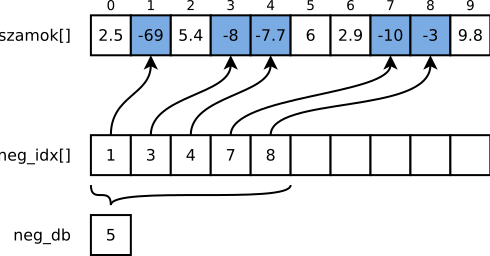

Labor, 4. hét: struktúrák és függvények
Pohl László, Czirkos Zoltán · 2019.09.30.
Struktúrák és függvények kezelése. Néhány vezérlési szerkezet.
Felkészülés a laborra:
- A switch szerkezet megértése.
- A struktúrákról tanultak átismétlése.
- A függvényekről tanultak átismétlése.
Adott egy valós számokat tartalmazó tömb, benne vegyesen mindenféle előjelű számokkal.
Írj egy olyan programot, amelyik kilistázza a tömböt az elemek indexeivel! (Emlékezz vissza, ezt a feladatot egyszer már megoldottad laboron.) Valahogy így:
Összesen 10 szám van. [0]=2.5 [1]=-69 [2]=5.4 [3]=-8 [4]=-7.7 [5]=6 [6]=2.9 [7]=-10 [8]=-3 [9]=9.8
A következő lépés kigyűjteni egy másik tömbbe a negatív tömbelemek indexeit. Listázd ki ezeket az indexeket is!
Ebből 5 szám negatív. Indexeik: 1 3 4 7 8
Ha ez is megvan, egy olyan programrészt kell írnod, amelyik az indexek ismeretében kiírja, hogy mik voltak a negatív számok. Fontos, hogy ne keresd meg újra a negatív számokat! Elvégre is, ha az indexeik megvannak, abból már lehet tudni, melyek voltak azok. A végleges eredmény valami ilyesmi legyen:
Összesen 10 szám van. [0]=2.5 [1]=-69 [2]=5.4 [3]=-8 [4]=-7.7 [5]=6 [6]=2.9 [7]=-10 [8]=-3 [9]=9.8 Ebből 5 szám negatív. [1]=-69 [3]=-8 [4]=-7.7 [7]=-10 [8]=-3
Rajzolj ábrát, amely a tömböket, a tömbelemekben tárolt számokat, és az azok közötti összefüggéseket ábrázolja! Hány elemű kell legyen az a tömb, amelyik az indexeket tárolja? Honnan fogja tudni a negatív elemeket kiíró programrész, hogy hány negatív elem volt?
Megoldás
Az adatszerkezetünk az alábbi:
A szamok[] tömb tartalmazza a vizsgálandó valós számokat. Fölötte a tömb indexei láthatóak. A
neg_idx[] tömb az, amelybe a negatív számok indexei kerültek. Hasonlítsuk össze a benne tárolt
számokat a fent látható indexekkel! Látszik, hogy a kékkel jelölt elemek sorszámai kerültek az alsó tömbbe.
A neg_idx[] tömb önmagában nem túl hasznos, a benne lévő indexek nem mondanak semmit. A
szamok[] tömbbel együtt azonban az indexeknek jelentése van: minden index hivatkozik egy
negatív számra a fenti tömbből. Az alsó tömb mondanivalója tehát: „a felső tömb 1., 3., 4., 7. és 8. indexű
eleme kisebb nullánál”. Valóban, szamok[1], szamok[3], szamok[4],
szamok[7] és szamok[8] mind negatívak. Ezek pont a kék elemek.
Az indexeket tároló tömb méretét felülről tudjuk becsülni: legfeljebb annyi index lesz benne, ahány szám az eredeti tömbben volt. Ilyen akkor fordulhat elő, ha az eredeti csak negatív számokat tartalmazott. Miközben vizsgáljuk az eredeti tömböt, szükség van egy számlálóra. Ez a számláló fogja tárolni azt, hogy hány negatívat találtunk. Ugyanezt a kiválogatás közben indexelésre is használhatjuk, ahogyan azt eddig is láttuk hasonló algoritmusoknál.
#include <stdio.h>
int main(void) {
double szamok[10] = { 2.5, -69, 5.4, -8, -7.7, 6, 2.9, -10, -3, 9.8 };
/* Az eredeti tömb kiírása */
printf("Összesen %d szám van.\n", 10);
for (int i = 0; i < 10; ++i)
printf("[%d]=%g ", i, szamok[i]); // 1
printf("\n\n");
/* Negatívak indexeinek kigyűjtése */
int neg_idx[10];
int neg_db = 0;
for (int i = 0; i < 10; ++i) {
if (szamok[i] < 0) {
neg_idx[neg_db] = i;
++neg_db;
}
}
/* Negatívak kiírása */
printf("Ebből %d szám negatív.\n", neg_db);
for (int i = 0; i < neg_db; ++i)
printf("[%d]=%g ", neg_idx[i], szamok[neg_idx[i]]); // 2
printf("\n");
return 0;
}Érdemes összehasonlítani az 1-es és 2-es jelű sorokat. Mindkettő arra hivatott, hogy kiírjon egy tömbindexet
és a tömbbeli elemet a program kimenetére. De míg az első esetben a teljes tömböt kiírjuk, a másodikban már
csak a negatív számokat. Ilyenkor a kiírandó indexet (sorszámot) is a neg_idx[] tömbből vesszük,
és a szamok[] tömböt is olyan sorszámmal indexeljük meg, amelyet a neg_idx[] tömbből
vettünk ki.
Fontos, hogy ezeken a pontokon nincs mit keresgélni a tömbökben. A neg_idx[i] kifejezéssel megkapjuk
a szükséges indexet; ezek után a szamok[] tömbön nem futtatunk semmiféle ciklust, hanem csak
megindexeljük és kész.
Írj függvényeket, amelyek valós számot vesznek át, és visszatérnek az:
kob()– harmadik hatványával,abszolut()– abszolút értékével (vanfabs()függvény, de most ne használd)!
Írj programot, amelyik a = −1-től +1-ig, tizedenként lépve, kiírja egymás mellé a, a3, |a| és sin(a) értékét,
mindig négy tizedesjegy pontossággal!
Megoldás
#include <stdio.h>
#include <math.h>
double kob(double x) {
return x*x*x;
/* vagy: return pow(x, 3); */
}
double abszolut(double x) {
if (x < 0)
return -x;
else
return x;
/* vagy: return x < 0 ? -x : x; */
}
int main(void) {
for (double a = -1; a <= +1; a += 0.1)
printf("%10.4f %10.4f %10.4f %10.4f\n", a, kob(a), abszolut(a), sin(a));
return 0;
}Hasonló feladatok
Ha ez a feladat nehezen ment, megoldhatsz pár hasonló feladatot a példatárból, mielőtt a következő feladatra rátérsz.
Vigyázz, a laborfeladatokat erősen ajánlott az utolsó feladatig megoldani, hogy a jövő hétre felkészült legyél. Ha nem sikerül, fejezd be őket otthon!
Adott az alábbi program, amely madárnyelven (mavadávárnyevelveven) írja ki a beírt szöveget.
#include <stdio.h>
int main(void) {
char c;
while (scanf("%c", &c) != EOF) {
if (c=='a' || c=='e' || c=='i' || c=='o' || c=='u')
printf("%cv%c", c, c);
else
printf("%c", c);
}
return 0;
}Írj függvényt, amelyik megmondja egy betűről, hogy magánhangzó-e! Alakítsd át úgy
a programot, hogy a megírt függvényt használod a main()-ben!
Megoldás
#include <stdio.h>
#include <stdbool.h>
/* Igaz ertekkel ter vissza, ha a parametere egy maganhangzo. */
bool maganhangzo(char c) {
return c=='a' || c=='e' || c=='i' || c=='o' || c=='u';
}
int main(void) {
char c;
while (scanf("%c", &c) != EOF)
if (maganhangzo(c))
printf("%cv%c", c, c);
else
printf("%c", c);
return 0;
}Hogyan lehetne megoldani azt, hogy a nagybetűvel kezdődő szavakat is helyesen kezelje a program? Pl. az „Alma” szóra azt kell
kiírnia, hogy „Avalmava”. Ehhez fel kell tudnia ismerni a nagybetűvel írt magánhangzókat is. Kiíráskor a
v betű előtt az eredeti karaktert kell kiírni, utána pedig a kisbetűsítettet. Használhatod a meglévő
maganhangzo() függvényt is, csak a beolvasott karaktert kisbetűsítve kell odaadnod neki.
Megoldás
Jól látszik a megoldásban a fenti magyarázat: a maganhangzo függvénynek a kisbetűsített
karaktert adjuk: maganhangzo(tolower(c)). A kiírásnál az első karakter az eredeti: c,
a második a kisbetűsített: tolower(c). Használható a beépített tolower() függvény is
(#include <ctype.h>), vagy egy saját változat.
while (scanf("%c", &c)==1)
if (maganhangzo(tolower(c)))
printf("%cv%c", c, tolower(c));
else
printf("%c", c);Hasonló feladatok
Ha ez a feladat nehezen ment, megoldhatsz pár hasonló feladatot a példatárból, mielőtt a következő feladatra rátérsz.
Vigyázz, a laborfeladatokat erősen ajánlott az utolsó feladatig megoldani, hogy a jövő hétre felkészült legyél. Ha nem sikerül, fejezd be őket otthon!
Az itt látható táblázat egy futóverseny eredményeit tartalmazza.
| Index | Név | Születés | Helyezés |
|---|---|---|---|
| 0 | Am Erika | 1984. 05. 06. | 1 |
| 1 | Break Elek | 1982. 09. 30. | 3 |
| 2 | Dil Emma | 1988. 08. 25. | 2 |
| 3 | Kasza Blanka | 1979. 06. 10. | 5 |
| 4 | Reset Elek | 1992. 04. 05. | 4 |
Alább egy elkezdett programot látsz, amelyben a megfelelő típusok már definiálva vannak, és az adatokat egy tömb tartalmazza. Egészítsd ki a programot, hogy kiírja a képernyőre a kommentekben megadott adatokat!
#include <stdio.h>
typedef struct Datum {
int ev, ho, nap;
} Datum;
typedef struct Versenyzo {
char nev[31];
Datum szuletes;
int helyezes;
} Versenyzo;
void datum_kiir(Datum d);
void versenyzo_kiir(Versenyzo v);
int main() {
Versenyzo versenyzok[5] = {
{ "Am Erika", {1984, 5, 6}, 1 },
{ "Break Elek", {1982, 9, 30}, 3 },
{ "Dil Emma", {1988, 8, 25}, 2 },
{ "Kasza Blanka", {1979, 6, 10}, 5 },
{ "Reset Elek", {1992, 4, 5}, 4 },
};
/* 0-s versenyző neve - printf %s */
/* 2-es versenyző helyezése */
/* 4-es versenyző születési dátumát (írd meg a datum_kiir függvényt!) */
/* 1-es versenyző nevének kezdőbetűjét (ne feledd, a sztring karaktertömb) */
/* az 1-es versenyző dobogós-e? igen/nem, akár ?: operátorral, de egy printf-fel */
/* az 4-es versenyző gyorsabb-e, mint a 3-as versenyző? */
/* az 1-es versenyző ugyanabban az évben született-e, mint a 2-es? */
/* egészítsd ki a versenyzo_kiir() függvényt,
* aztán írd ki az 1-es versenyző összes adatát */
/* végül listázd ki az összes versenyzőt sorszámozva, összes adatukkal. */
return 0;
}
void datum_kiir(Datum d) {
/* dátum kiírása */
}
void versenyzo_kiir(Versenyzo v) {
/* a versenyző összes adatának kiírása */
}Megoldás
#include <stdio.h>
typedef struct Datum {
int ev, ho, nap;
} Datum;
typedef struct Versenyzo {
char nev[31];
Datum szuletes;
int helyezes;
} Versenyzo;
void datum_kiir(Datum d);
void versenyzo_kiir(Versenyzo v);
int main() {
Versenyzo versenyzok[5] = {
{ "Am Erika", {1984, 5, 6}, 1 },
{ "Break Elek", {1982, 9, 30}, 3 },
{ "Dil Emma", {1988, 8, 25}, 2 },
{ "Kasza Blanka", {1979, 6, 10}, 5 },
{ "Reset Elek", {1992, 4, 5}, 4 },
};
/* 0-s versenyző neve - printf %s */
printf("%s\n", versenyzok[0].nev);
/* 2-es versenyző helyezése */
printf("%d\n", versenyzok[2].helyezes);
/* 4-es versenyző születési dátumát a megadott függvénnyel */
datum_kiir(versenyzok[4].szuletes);
/* 1-es versenyző nevének kezdőbetűjét (ne feledd, a sztring karaktertömb) */
printf("%c\n", versenyzok[1].nev[0]);
/* az 1-es versenyző dobogós-e? igen/nem, akár ?: operátorral, de egy printf-fel */
printf("%s\n", versenyzok[1].helyezes <= 3 ? "igen" : "nem");
/* az 4-es versenyző gyorsabb-e, mint a 3-as versenyző? */
printf("%s\n", versenyzok[4].helyezes < versenyzok[3].helyezes ? "igen" : "nem");
/* az 1-es versenyző ugyanabban az évben született-e, mint a 2-es? */
printf("%s\n", versenyzok[1].szuletes.ev == versenyzok[2].szuletes.ev ? "igen" : "nem");
/* egészítsd ki a versenyzo_kiir() függvényt,
* aztán írd ki az 1-es versenyző összes adatát */
versenyzo_kiir(versenyzok[1]);
/* végül listázd ki az összes versenyzőt sorszámozva, összes adatukkal. */
for (int i = 0; i < 5; ++i) {
printf("%d. ", i);
versenyzo_kiir(versenyzok[i]);
}
return 0;
}
void datum_kiir(Datum d) {
printf("%d.%d.%d.\n", d.ev, d.ho, d.nap);
}
void versenyzo_kiir(Versenyzo v) {
printf("%s, %d.%d.%d., %d\n", v.nev, v.szuletes.ev, v.szuletes.ho, v.szuletes.nap, v.helyezes);
}Készíts egyszerű menüvezérelt programot! A program tároljon el egy számot, melynek kezdőértéke a = 1. Ezt
követően a program jelenítse meg a képernyőn a értékét, és az alább látható menüt. A megfelelő menüpont számának megadása
(scanf()-fel) után hajtsa végre a-n a kiválasztott műveletet, írja ki újból a új értékét és a menüt! A
menüből mindaddig lehessen újból választani, míg a kilépést nem választja a felhasználó! Használj switch-et és
do ... while(), azaz hátultesztelő ciklust!
printf("0. Alapertek visszaallitasa (a = 1)\n"
"1. Hozzaad 1-et\n"
"2. Megforditja az elojelet\n"
"3. Szorozza 2-vel\n"
"9. Kilepes\n");Minden egyes tevékenységet (műveletet) egy pici függvény valósítson meg, amelynek bemenő paramétere az a változó
tartalma, visszatérési értéke pedig a megváltozott szám! A main() ezen függvények hívásával végezze el a
feladatát!
Miért olyan lényeges ez a feladat?
Figyeld meg a kapott főprogramot! Ez irányítja a többi függvény működését: meghívja az egyes részfeladatokhoz tartozó alprogramokat, amelyek dolgukat végezve visszatérnek, újra a főprogram kezébe adva az irányítást. A főprogram és az alprogramok a paramétereken és a visszatérési értékeken keresztül kommunikálnak.
Megoldás
A tevékenység kiválasztásához a switch szerkezetet érdemes használni; úgy egymás
alatt, a választott szám szerint felsorolhatóak az értékadások. Figyelni kell, ne maradjon ki a break!
A menürendszer keretét pedig egy ciklus adja. Ez azért lehet hátultesztelő, mert egyszer biztosan végre
kell hajtani a törzsét: a menü kiírását, a szám beolvasását.
#include <stdio.h>
int alap() {
return 1;
}
int novel(int a) {
return a+1;
}
int megfordit(int a) {
return -a;
}
int duplaz(int a) {
return 2*a;
}
int main(void) {
int menupont;
int a = alap();
do {
printf("a = %d\n\n", a);
printf(
"0. Alapérték visszaállítása (a = 1)\n"
"1. Hozzáad 1-et\n"
"2. Megfordítja az előjelét\n"
"3. Szorozza 2-vel\n"
"9. Kilépés\n"
"? ");
scanf("%d", &menupont);
switch (menupont) {
case 0: a = alap(); break;
case 1: a = novel(a); break;
case 2: a = megfordit(a); break;
case 3: a = duplaz(a); break;
case 9: /* semmi, majd kilepunk */ break;
default: printf("NA!\n"); break;
}
printf("\n"); /* hogy ne folyjon ossze */
} while (menupont != 9);
return 0;
}Ha elkészültél, folytasd a feladatgyűjtemény ehhez a témakörhöz kapcsolódó struktúrákkal kapcsolatos feladataival!